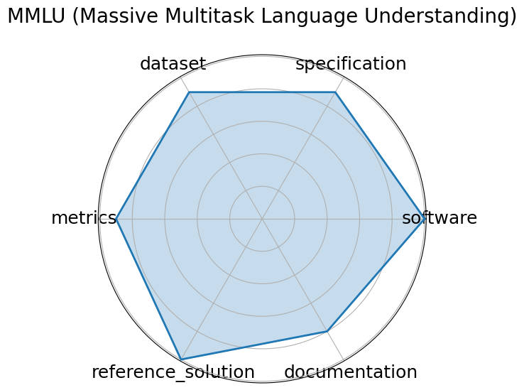

Edit: edit this entry
Date: 2020-09-07
Name: MMLU Massive Multitask Language Understanding
Domain: Multidomain
Focus: Academic knowledge and reasoning across 57 subjects
Keywords: multitask, multiple-choice, zero-shot, few-shot, knowledge probing
Task Types: Multiple choice
Metrics: Accuracy
Models: GPT-4o, Gemini 1.5 Pro, o1, DeepSeek-R1
Citation:
Dan Hendrycks, Collin Burns, and Saurav Kadavath. Measuring massive multitask language understanding. 2021. URL: https://arxiv.org/abs/2009.03300.
bibtex: ``` @misc{hendrycks2021measuring,
title={Measuring Massive Multitask Language Understanding},
author={Hendrycks, Dan and Burns, Collin and Kadavath, Saurav},
journal={arXiv preprint arXiv:2009.03300},
year={2021},
url={https://arxiv.org/abs/2009.03300}}
```
Ratings:
Software:
Rating: 0
Reason: No instructions to download or run data given on the site
Specification:
Rating: 4
Reason: No system constraints
Dataset:
Rating: 5
Reason: Meets all FAIR principles and properly versioned.
Metrics:
Rating: 5
Reason: Fully defined, represents a solution’s performance.
Reference Solution:
Rating: 2
Reason: Reference models are available i.e. GPT-3 , but are not trainable or publicly documented
Documentation:
Rating: 5
Reason: Well-explained in a provided paper.
Average Rating: 3.5
Radar Plot: 